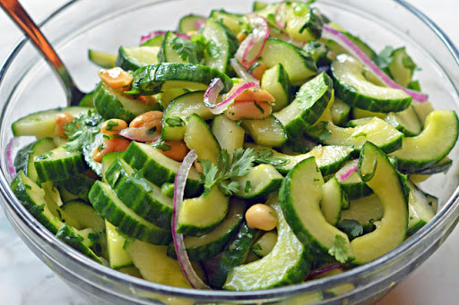

กฎทั่วไป
หลักการสำคัญของอาหารมังสวิรัติคือการปฏิเสธอย่างสมบูรณ์ที่จะกินผลิตภัณฑ์ที่ได้จากสัตว์ การกินเจเป็นวิถีชีวิตที่ไม่เพียง แต่ช่วยปรับปรุงคุณภาพ แต่ยังช่วยลดจำนวนปอนด์พิเศษอีกด้วย
การลดน้ำหนักด้วยอาหารมังสวิรัติที่สมดุลนั้นมีประสิทธิภาพเสมอ นอกเหนือจากการกำจัดน้ำหนักส่วนเกินและทำความสะอาดร่างกายผู้สนับสนุนการทานมังสวิรัติเน้นย้ำถึงความรู้สึกของความสว่างในร่างกายและอารมณ์ที่ดีขึ้น อาหารมังสวิรัติเป็นผู้นำในการลดน้ำหนักที่รู้จักมานาน
นักโภชนาการและแพทย์กล่าวด้วยเสียงเดียวว่าอาหารมังสวิรัติมีประโยชน์ต่อการฟื้นฟูร่างกายเพราะมัน จำกัด การสะสมของไขมันและคอเลสเตอรอลที่เป็นอันตราย ผู้ติดตามของระบบอาหารนี้กินอาหารที่มาจากพืชซึ่งอุดมไปด้วยวิตามินใยอาหารและองค์ประกอบการติดตามที่มีประโยชน์
อาหาร Geobotanical มีไขมันและแคลอรี่น้อยกว่าผลิตภัณฑ์จากสัตว์ ผักและผลไม้ทำให้การทำงานของลำไส้เป็นปกติปรับปรุงความเป็นอยู่ทั่วไปผ่อนคลายความหิว ตามที่ระบุไว้ผู้สนับสนุนอาหารมังสวิรัติมีแนวโน้มที่จะเป็นมะเร็งน้อยลงและมีแนวโน้มที่จะเป็นโรคความดันโลหิตสูง มันเป็นสิ่งที่หายากมากสำหรับมังสวิรัติในการพัฒนาโรคหัวใจและโรคหลอดเลือดสมอง
อาหารลดน้ำหนักมังสวิรัติเป็นผลมาจากการเผาผลาญไขมันตามธรรมชาติและการต่ออายุของร่างกาย ด้วยการเตรียมเมนูที่เหมาะสมและการปฏิบัติตามกฎระเบียบอย่างเข้มงวดอาหารจะช่วยกำจัด 2-6 กิโลกรัมเป็นเวลา 14 วัน
เพื่อทราบข้อมูลเพิ่มเติม
ความหลากหลาย
คำนำหน้า "veg" หมายถึงไม่รวมเนื้อสัตว์จากอาหาร แต่การกินเจมีความแตกต่างมากมายที่ไม่เพียง แต่เกี่ยวข้องกับโภชนาการ แต่ยังรวมถึงวิถีชีวิตด้วย มังสวิรัติแบ่งออกเป็นกลุ่มที่แตกต่างกันในอุดมการณ์และผลิตภัณฑ์ที่บริโภค กลุ่มพื้นฐานที่สุดคือหมิ่นประมาทและมังสวิรัติเป็นความแตกต่างที่สำคัญระหว่างที่พบในความเข้มงวดทางโภชนาการ
นักหมิ่นประมาทที่บริสุทธิ์ไม่กินเนื้อสัตว์ปฏิเสธปลาและนมยกเว้นไข่จากอาหาร อนุญาตให้ใช้น้ำผึ้งในปริมาณเล็กน้อย ระบบอาหารที่เข้มงวดดังกล่าวได้รับการพิจารณาว่าไม่ดีต่อสุขภาพมากในการแพทย์กระแสหลัก การปฏิเสธการบริโภคโปรตีนจากสัตว์อย่างชัดเจนนำไปสู่การพัฒนาของการขาดวิตามินและการลดลงของระดับเฮโมโกลบิน
การยึดมั่นอย่างเคร่งครัดกับกฎทั้งหมดนำไปสู่ผลกระทบร้ายแรง หากคุณไม่ได้รับสารอาหารในปริมาณที่เพียงพอที่ร่างกายต้องการในรูปแบบของผลิตภัณฑ์ต่าง ๆ จากนั้นผลข้างเคียงเกิดขึ้นซึ่งเป็นสิ่งที่บางคนหมิ่นประมาทเริ่มต้นพบว่าพวกเขาไม่ได้คิดถึงอาหารใหม่จากทุกด้านก่อนเริ่ม หมิ่นประมาทกินอะไร.
ผู้ทานมังสวิรัติชอบอาหารประเภทผักอนุญาตให้ใช้ปลาอาหารทะเลไข่ผลิตภัณฑ์จากนมได้ รายการต่อไปนี้ไม่รวมอยู่ในอาหาร: เนื้อวัว, เนื้อหมู, เนื้อแกะ คุณสามารถกินน้ำผึ้งในปริมาณเล็กน้อย แพทย์ระบุว่าการทานมังสวิรัติชั่วคราวจะเป็นประโยชน์ต่อร่างกาย.
มังสวิรัติแบ่งออกเป็นหลายกลุ่มย่อย
เพื่อทราบข้อมูลเพิ่มเติม
Lacto-มังสวิรัติ
พวกเขายึดมั่นในระบบที่ได้รับการส่งเสริมอย่างกว้างขวางโดยกระแสทางศาสนาและปรัชญาของอินเดีย อาหาร lacto- มังสวิรัติช่วยให้นอกเหนือไปจากอาหารทางภูมิศาสตร์ที่จะกินครีม, kefir, นมและเนย
Ovo-มังสวิรัติ
โปรแกรมโภชนาการห้ามการบริโภคนม แต่อนุญาตให้ใช้น้ำผึ้งและไข่ในเมนู อาหารที่มีไข่เป็นสิ่งที่ถูกต้องตามหลักจริยธรรมเนื่องจากการเลี้ยงสัตว์ปีกสมัยใหม่ผลิตไข่ที่ไม่ได้ผ่านการทำให้บริสุทธิ์ในตลาดเนื้อหาที่ไม่ได้มีชีวิตอยู่ นอกจากนี้ไข่ยังมีอยู่ในการปรุงอาหารและในหลายจาน การทานอาหารมังสวิรัตินั้นถือเป็นรูปแบบการอดอาหารแบบประชาธิปไตยและเหมาะสำหรับผู้ที่ไม่ทนต่อผลิตภัณฑ์นม
เพื่อทราบข้อมูลเพิ่มเติม
Lacto-Ovo-มังสวิรัติ
นี่คือกลุ่มที่หลากหลายที่สุด อาหาร lacto-ovo- มังสวิรัติไม่รวมการบริโภคปลาเนื้อสัตว์และนกอาหารทะเล ระบบโภชนาการช่วยให้สามารถใช้นมและไข่ในอาหารได้
การทับถม
อาหารสำหรับมังสวิรัตินั้นแสดงให้ทุกคนที่เห็นว่ามีเหตุผลด้านจริยธรรมและทางการแพทย์ไม่สามารถบริโภคผลิตภัณฑ์บางอย่างได้ ระบบโภชนาการยังสามารถใช้สำหรับการลดน้ำหนัก
ผลิตภัณฑ์ที่ได้รับอนุญาต
อาหารมังสวิรัติแบบคลาสสิกอนุญาตให้คุณบริโภคเฉพาะอาหารที่ได้จากพืชผักเท่านั้น ในลำดับความสำคัญของผักและผลไม้สดผักใด ๆ มันสามารถใช้ในอาหารและผลิตภัณฑ์นมไข่ (ร่างกายต้องการโปรตีน)
เพื่อทราบข้อมูลเพิ่มเติม
